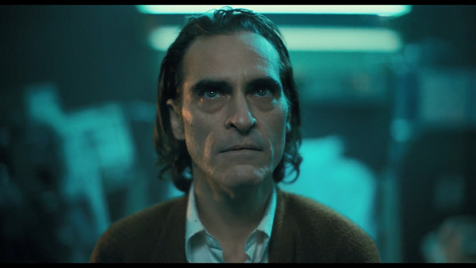

• 流光飞影
小丑
看完了 Joaquin Phoenix 主演的《小丑》。
精湛的演技，奇怪的感觉，大概属于可以理解但无法认同？
全片印象最深的一幕不是楼梯上的放飞自我，不是强装笑脸，不是站在警车上的忘我舞蹈，而是被偶像在电视节目中公然羞辱后的表情。

事业、亲情、爱情、尊严甚至药物，每种主角所珍视的事物都在给了他希望之后又残忍剥夺，换做我也会崩溃。
我能够理解这一人物在一连串打击下如何蜕变为小丑。
只是我还是无法认同他的价值观和所作所为。
不管命运如何玩弄和嘲笑我们，我们总归要超越混沌与虚无，才能在更坚实的基础之上，建立能容纳心灵的意义世界。
当社会让人既看不到改变命运的希望，又得不到心灵的自我满足或慰籍时，会有越来越多的人期待混乱出现。
他们打破一切，走上广场狂欢，继而从广场狂欢变成腥风血雨。
但疯狂终归要回归理性，即使是曾经相互挥舞屠刀的人，其心中至少仍有乌托邦，希望建立一个美好的秩序。
而小丑不一样，彻底绝望的他已经不需要任何重建。
这是他的力量来源。
当人类社会不可避免地走向衰败、无序、毁灭时，小丑所代表的混沌就会出现，蛊惑人们抛弃希望，拥抱虚无。
还好，在现实中，小丑通常只会成为乌合之众心目中代表社会重新洗牌运动的一个符号。
当精疲力竭的群众厌倦和恐惧无死角、无底线的互相残杀后，这个符号就会弃之一旁，等待下一次有人再想煽动乌合之众时引入。
小丑本身可怕吗？
作为个人一点都不可怕。
在电影中，他是个在普通不过的潦倒人物，两个小警察就可以追得他仓皇逃窜；
在漫画中，经常被揍得半死不活，关进精神病院；
在现实中，大多数人都不会真想成为小丑——只要没有人点燃他们心中混沌虚无的导火线。
可怕的是会源源不断制造小丑的社会。